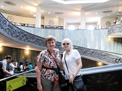

Maureen Fitzsimon's Ladies Vacanze in Italia 2012
Week Two. Rome.
Sunday 23 September
Rome
Went to the Latin Mass at St Peter's this morning. We all did. Kept looking up at that huge dome hoping it didn't fall down, in view of the overall slender religious credentials of the group. This time in Rome, they made us join the big queue, and it took 20 minutes to be scanned and enter. Lots of smells and bells and lovely music and a great vibe.
St. Peter's Square, er, oval?
Helen and Jill in St Peter's
Looked around St Peter's and went to a very reasonable restaurant nearby. This time in Italy, everything is SO CHEAP! I know, I've said it before, but we certainly could not pick any main meal for 8 euros, 100 metres from St Peter's, last time we were here!
Then decided to buy a 2 day Hop on Hop off bus pass for 48 hours. At 23 euros, it was a bargain. Had a great tour. 28°C Max, with a light breeze and blue skies. Talk about perfect!
Staggered back to the apartment. Tonight off to The Spanish steps and the Trevi Fountain.
Cheers,
Maureen.
Maureen with her three coins for the Trevi Fountain
Deb, Helen, Jill, Mary & Eileen at the Trevi Fountain
Monday 24 September
Rome
Set off early, for our second day on the open top bus. They predicted 30°C, but a breeze kept things not too bad.
You see quite a bit on the open top bus, but, gee whiz, does it take forever! We stopped 20 minutes at Terminii station!
Decided to go on a guided tour of the Colosseum. This was my second time inside there, and the guide made it very interesting. We heard lots of grisly stuff about people being fed to hungry wild animals, and unfair fights to the death. Even the peasants were allowed free admission to the top tiers of the Colosseum. In ancient Rome, every second day was a holiday, and families with children came to see the various cruel, blood sports, much like a day out at Dreamworld with a free season pass! They had a sort of roof on the building which they frequently raised and lowered, to let out the smells of dead flesh!
It would appear that those captured in battle, and lower classes were the victims, not Christians, as legend has it. Although estimations are difficult, it is said that 700,000 people met their death in the Colosseum. For fun and entertainment!
As the Catholic Church rose to power from 300AD onwards, they plundered the Roman ruins for marble, and other building materials, to build Christian churches and stick it up the Pagans. An earthquake in the 1300s caused extensive damage to the Colosseum, as almost all of the reinforcing iron had been removed.
It is amazing that it took only 8 years to build, as it can seat 60,000 people, and they had no machinery.
The guided tour went on to the Palatine Hill, and was very interesting. The buildings must have looked so stunning and powerful, clad in glistening white marble. Should have impressed any foreign powers thinking of having a go at the Romans!
I always thought there were only 7 hills in Rome, but it turns out, that they just counted the first 7 from the centre as the number "7" was good luck!
We then wandered through the remains of the Roman forum. Hot! Then up one million stairs to the Vittorio Emanuele II building and then back on the bus.
Deb, Helen, Jill
Roman Colosseum
Helen, Deb, Jill, Eileen
Palatine Hill
 Jill, Roman Forum
Jill, Roman Forum
Eileen, Helen, Deb & Jill
Roman Forum
Vittorio Emanuele II building
Step Class near Vittorio Emanuele II
Bought a daggy suitcase. Came over here with only a carry-on size bag, so everything fitted in the car in Tuscany. Jill is taking the carry-on to Edinburgh, where she is spending a week with a friend, and I am taking home her summer clothes and a few presents.
Deb keeps meeting men who are just so warm and affectionate towards her, like in the suitcase shop, and even our apartments. Unfortunately, she is just dreadful at protocol. Picking the wrong cheek to pucker, EVERY SINGLE TIME, she just crashes noses. There are wounded peckers all over Italy, solely due to Deb's lack of kissy-kissy finesse!
Jill went shopping with Helen late this afternoon, to replace the stolen coat. This involved many purchases by both of them. The consequences of a robbery are just terrible!
Meanwhile, Deb, Eileen, and Moi went shopping for groceries. We put the many bottles of water and juice, and other stuff in the big new suitcase. You should have heard the vocals hauling that lot up 6 flights of stairs! Those tennis players have nothing on Deb and I!
Marinating the salmon now in wine, balsamic vinegar, lemon, salt, pepper, and a pinch of sugar. $2 a serve, if you please!
Exhausted!
Cheers,
Maureen.
Tuesday 25 September
Vatican to the Max
Firstly, we are in Rome, not the Cinque Terre. We were going to do the walk the 4 Australians were doing, when injured by a landslide yesterday, but Jill's robbery occurred, and we decided not to. Jill had a St Christopher medal attached to her purse, which was left behind in the handbag, when the thieves stole her purse. She is now of the opinion that St Chris saved us from a landslide. Have to say, that's a positive take on a robbery. Robbery beats injury in a landslide any time!
Did our tour of the Necropolis Scavi. Only 250 people a day can visit the Scavi, due to the narrow passages. We had booked this a year ago. The Necropolis Scavi involves all the excavations under the main altar of St Peter, dating back to the origins of Christianity. St Peter�s bones are buried here. It is interesting that St Peter's is built on extensive Pagan Mausoleums. These were filled in, and the first St Peter's built in the 3rd century, and the current one in the Renaissance. Is this crushing the Pagans underfoot?
It was a small group tour, expertly done. There were flocks of nuns running the souvenir shop at the end.
Pope John Paul VI's tomb had been moved from the basement, where it was last time I visited, to right near the Pieta, in the main church. He has his own Chapel now. I wonder who was demoted to make way for him?
Went back inside St Peter's, which these days has all sorts of barriers directing the 25,000 visitors a day. Rather like IKEA.
Helen, Jill and I went on to the Vatican Museums. The guided tour was supposed to include Catacombs. Didn't. More about that later.
Anyway, it was fantastic. Sculptures, carpets, paintings, ...
With our guide
Vatican Museum
Helen & Jill
Vatican Museum
Trompe-l'�il Ceiling
Vatican Museum
Fertility Godess
Vatican Museum
 Carpet
Carpet
Vatican Museum
Marble Sculpture
Vatican Museum
Sistine Chapel Ceiling
Top: God made Man
Helen & Jill
Vatican Museum
Spirituality and Culture of Aboriginal Australians; Vatican Museum

Maureen & Helen
Vatican Museum
Spiral Ramp/Staircase
Vatican Museum
At the end we had cappuccinos. €1.30 each.
Then cooked up more salmon for dinner. €2.50 each. And €0.50 for Tiramisu.
Off on a tour to the Amalfi and Surrounds tomorrow early.
Cheers,
Maureen.
Wednesday 26 September
Pompeii and the Amalfi
The girls think we have a foot spa in our unit. They indulge in decadent soaking of the extremities after long days of trudging around antiquities. Don't tell them, but the so called "foot spa" is actually a Bidet! OK, we are from Logan!
We'll all be lining up for a good soak tonight.
Our rather drop dead gorgeous hunk (putting it mildly!) of a driver/guide, Francesco, arrived pronto at our apartmento at 7.30am. He turned out to be an excellent driver, a necessity on the narrow winding roads which cling to the cliffs in the Amalfi.
Although he had the odd conversation on the mobile while reversing etc., he wasn't like the other Italian drivers who do their hair, while texting, smoking, and driving at the same time. Of course, all of the above is illegal in Italy when driving, but illegality never seems to be a consideration for Italians.
Once we left the outskirts of Napoli (Naples), the ocean road was simply magnificent. After a very light shower leaving Roma, the day cleared to fine and hot.
Eventually, we arrived in Positano. Ooooooh! Wow! The beach had dark grey sand, but the setting was splendid. Positano weaved some magic, and the girls were in a retail therapy frenzy. Again! They win a gold medal for their tireless unswerving dedication to saving the dire Italian economy.
Outside Napoli
Helen, Chris, Deb, Jill, Maureen, Mary & Eileen
Maureen at Positano
Valuables in bulky shirt!
Next, Francesco took us high up into a cliff village above Positano to "Trattoria La Tagliata". This place clings to the cliff and has steep terraces down the mountain, where they grow all manner of fruit and vegies. They also have chooks and pigs. Everything in the restaurant is made with their own produce. There is no menu. They bring out plate after plate of seasonal dishes and several types of gnocchi, ravioli and pasta. Then dessert. Meals include home-made wines, mineral water etc., all for 25 Euros.
It was just delicious! And the view was staggeringly beautiful! We staggered up the hill to the van. Luckily, we had eaten little for breakfast.
With Mama, who makes the pasta
Trattoria La Tagliata
 Trattoria La Tagliata
Trattoria La Tagliata
On we went, past more stunning coastal scenery, with the blue Mediterranean glistening in the sunlight.
We arrived at Pompeii, and it was jolly hot. A local guide, another Francesco - who had 3 University degrees and an encyclopaedic knowledge of not only Pompeii, but films, and even Australia - took us around the site. Not all of it, however. Pompeii was quite a city, on about 65 hectares, with 150 shops, a big stadium, Forum, restaurants, take-away shops etc.
Average life expectancy was 23 years, so the plumbing, all done with lead pipes, would have been just starting to critically poison all your body organs, when your number was up, anyway. Extensive calcification of the pipes made a bit of a barrier to the lead, luckily.
Pompeii was covered in many metres of ash from the eruption of Vesuvius in 79 AD, not to be rediscovered for many hundreds of years. Well over a million people suffocated to death, as in Pompeii, or were killed by the lava, as in other villages. The whole shore line changed. Pompeii was a town by the sea. After the eruption, it was inland.
Apparently, Vesuvius is due to erupt again soon. The outer suburbs of Napoli sprawl up the slopes of this festering mountain, oblivious to any possibility of future natural disaster. A classic Italiano attitude to most things!
Mr Hottie and the Bedraggled Bunch
after a 13 hour day!
The tour company we travelled with today is called "Miles and Miles". It is a family owned company, and we recommend it highly. We could not have had a better day.
Deb and Chris leave on the train for Venezia (Venice), tomorrow morning. They have been wonderful company; really fabulous fun. They are then on to Vienna, to stay with Chris's son, Damon, (Deb's nephew). He lives in Venice.
We have another day tomorrow, and fly to Dubai on Friday.
Cheers,
Maureen.
Thursday 27 September
Last Day in Rome
We said a sad bye-bye to Chris and Deb, who nervously left for the train in a cab. Apparently, Deb fell as she alighted the train. Pretty hard. Later today, I was too busy looking at the scenery, and also went splat! Canon must make sturdy cameras, because mine survived a very hard fall onto my hands and knees. Embarrassing. I can be certain my Vitamin D is sky high, as we have had so much sunshine. Any browner and I'll qualify for land rights! Anyway, Deb and Chris arrived in Venice safely, and Damon is now looking after them. Chris has not seen this son for 4 years, so it is pretty special that they are able to catch up.
Took the remaining 5 of us to the Pantheon and Piazza Navona. The Pantheon is my favourite thing in Rome. Such precise geometrical building, 2000 years old, and in continuous use all of this time. How on earth the ancient Romans were able to so precisely engineer such a masterpiece is incredible to contemplate.
We were there fairly early in the day, so there were few people.
I went on to tour the Castel Sant'Angelo. The others chose to shop.
The Castel was built in AD139 as the Emperor Hadrian's Mausoleum. It has served a number of purposes over the years, including acting as a refuge for Popes during political unrest. There is a corridor linking it with the Vatican. There were great frescoes by Tibaldi, and fantastic views over Rome from the top.
Eileen, Mary, Helen & Jill
in the Pantheon
Bernini's fountain with the 4 great rivers, Piazza Navona
Outside the Senate with machine guns and the like; keeping a sharp look-out - NOT
Ceiling, Castel Sant Angelo
Top of Castel Sant Angelo
Pauline Hall, Castel Sant Angelo
Ceiling, Castel Sant Angelo
Went back to our apartment, and then left the others who wanted to relax for the afternoon.
I went to a restaurant recommended by Andy's friend, Raffaele, and had a lovely late lunch- at Cesaer's near the Castel Sant'Angelo. Then wandered over one of the bridges to walk up and down a myriad of streets in the centre of town, ending up at the Pantheon, again.
Went to Sant 'Ignazio di Loyola. This was built by Gregory XV in 1626, in honour of St Ignatius of Loyola, founder of the Jesuits. It certainly is an extravagant baroque church! However, the cupola is just painted in perspective, and never built. The local nuns didn't want their views obscured, so no dome! Nevertheless, the ceiling is incredibly decorated!
Then wandered into the somewhat dark, Santa Maria sopra Minerva. Gothic stuff! Built in the 13th century, over the ruins of a pagan temple of Minerva. This is Dominican territory! These were the blokes who put Galileo on trial! This place is just jam packed with priceless art works, and great stained glass. Medici Popes are buried here.
Michelangelo�s art features, and outside, Bernini has an amazing sculpture of an elephant with an obelisk on its back. Italy has more obelisks than any country on earth, including Egypt!
A whole street of priest clothes
Did lots of wandering, and found a whole street where they sold nuns' and priests' clothes!
Hopped on the bus and sat next to an Abbot from Canada, who had been at a conference. Interesting bloke!
Eating leftovers! We have managed to pay for diesel fuel for the car, and luxury food for 2 weeks, on 130 Euros each, plus a couple of lunches out for less than 20 Euros each. Not bad!
Italians earn only 300 Euros per week, and tax on companies is 55%. Personal tax is huge. If you have a business, the government "deems" your income. You must pay tax on this amount, even if your business didn't earn near the amount the Government estimates. Businesses fold at a huge rate.
The Italians think we have it so good. Illegal immigrants are everywhere here! Actually in their millions! Aussies should really stop whinging!
Early tomorrow, Jill is off to stay with her pen friend in Edinburgh for a week. The other 4 of us are off to Dubai for just under 48 hours.
We have had a fantastic time, and have been so fortunate- with our health, the weather, the opportunities etc., etc., lucky us!
Cheers,
Maureen.
Friday 28 September
Rome -> Dubai
Relaxed in the morning, packing up and cleaning the apartment, somewhat. Helen and I were groaning with suitcases jam-packed with Jill's shoes and summer clothes. She headed off to Edinburgh at 7 am to spend a week with her pen friend. We figured that clothes for 28C are definitely not the go in Edinburgh!!
We left at Midday, and Fiumacino Airport, Rome, had a massive queue! The A380 plane transports well over 400 passengers at a time. Fiumacino was built when you were probably lucky to have 200 in a go to process. Organizing anything, especially crowds, is just not in Italian DNA, but we were nice and early and eventually we were enjoying 3 movies, a lovely airline dinner, and made it to sleep in Dubai after 2am.
Saturday 29 September
Dubai, Abu Dhabi
The Flora Grand Hotel is very comfortable, indeed. With some effort, we dragged ourselves out of bed this morning, and headed off on a day tour to Abu Dhabi, 160 km away.
The Pakistani driver and guide from Rayna tours, was a delightful gentleman, with pretty good English. Apparently, the UAE has about 5 million people, and 4 million are from other countries. These ring-ins are never given citizenship, even if they marry a local. The big attraction here is zero tax, and great wages. Someone ought to let the Italians know!
We had one man on the tour from Iran, and the 4 of us.
Mr Iranian talked non-stop to Abu Dhabi. We arrived at the magnificent Sheikh Zayed Mosque, having travelled to Abu Dhabi on the 6 lane Sheikh Zayed freeway. The Sheikh was an important bloke around these parts, as he founded the UAE, bringing together 7 states. His gigantic photo is everywhere. We knew we had crossed the border from Dubai to Abu Dhabi because the street lights went from having 2 globes, to having 6 lamps.
It was 40°C or so - somewhat hot. The white marble Mosque, 3rd largest in the world, glistened in the overwhelmingly bright sunlight.
Ladies had to wear a cloak of black, with scarf. Mary had long trousers and a long sleeved shirt, so only had to don a black scarf.
The queue to this garb was so long, that we had only 10 minutes or so to meet our van in the car park. Our Iranian mate did not have to queue, as he was male, and arrived back at the van almost 25 minutes after the agreed time, and 3 phone calls to him later.
Our Pakistani driver was not amused. Nor were we. If only we had been able to spend all this extra time, as the Mosque was just beautiful.
The tongue lashing Mr Iran received from Mr Pakistan was right up there. He was told it was a tour, and if he did it again, we would drive off and leave him! This resulted in him being only 10 minutes late for subsequent departures!
Heritage Centre, Abu Dhabi
With Mr Creepy on trip to Abu Dhabi
Sheikh Zayed Mosque, Abu Dhabi
 Sheikh Zayed Mosque, Abu Dhabi
Sheikh Zayed Mosque, Abu Dhabi
Sheikh Zayed Mosque, Abu Dhabi
The tall buildings around Dubai and Abu Dhabi are sleek, classy, and imaginative. The streets are well landscaped, no doubt by our friend, Beth, who is a landscape architect in the city. We visited a "museum", which was really a shop selling tapestries with embedded jewels.
Bought a tiny camel, for my china cabinet. Also, we saw a 7 star hotel. It might be a bit expensive for Gina Rinehart, with some rooms at 40,000 dollars a night, and a rock bottom room for $4000 a night.
Then to a cultural centre with a nice little market with friendly shopkeepers and a view of the bright aqua water. Lunch was delicious, at Al Asalan Restaurant, on the waterfront.
Mary asks,
"Will petty cash cover one of these?"
We then briefly visited a Ferrari theme park, at Yas Island. This is the world's largest indoor theme park. It has the world's fastest rollercoaster, which is not indoors.
Mr Sleezy, arrogant Iranian arrived 10 minutes late to the car, just as we were leaving without him! The driver was sick to death of calling his mobile to hurry him up! I know a number of Iranians, and this one was the first I have met who really was a creep!
Back to Dubai, admiring the great design of the modern buildings.
The internet here is $13 an hour for slow and $18 an hour for fast. So no photos today! Will briefly connect to Telstra, and their charges are poisonous too!
Cheers,
Maureen.
Sunday 30 September
Dubai
Went for a stroll in the evening on Saturday. About 34°C at night. This place is bigger than I imagined! All of the food groups are here! KFC, Nandos, Domino's, Burger King!! Ended up back at the hotel having a snack in the lobby cafe.
Today, we had a little sleep in for the first time! Then, we piled into a taxi to the "creek" and ambled through the spice and gold souks.
Vanilla pods and saffron are 10% of the price in Australia. Will declare them and see what Aussie customs say. Ah! Couldn't you make a great curry here! The aroma of the souk is Masterchef heaven.
But we were on serious business and had to press on. All of us had money left over, and we all knew that we would lose if we had to cash it back to Aussie dollars at home. So, spend it we must!
Eils found the silver chain she had been seeking. Great! Having been now taught to shop by the best shoppers in the world (Are your ears burning, Jill?), I set about seeing what delights my Aussie, Euro, and USA currencies would bring.
A lovely bracelet caught my eye. Having beaten the chap down to 25% of the price, I was able to amass three piles of different currencies, and $100 on the credit card, for a truly gorgeous piece. I have earrings bought in South America which should match perfectly! Mission accomplished! I was broke! Thank you to "Emirates Diamonds" Gold Souk, Deira, and especially Ashish. He and I worked out the exchange rates on the 3 currencies together, and they were generous with their exchange rates. I told him that his mother must be proud that he paid attention in Maths class at school.
Heavy multi-currency finance buying a bracelet
With Ashish after bracelet purchase
We then took ourselves off to the Dubai Mall. Another shoppers' paradise, with many waterfalls and fountains and a massive aquarium.
The Burj Khalifa is adjacent. This is the world's tallest tower. At the ice-skating rink in Dubai Mall, we found a nice cafe, and enjoyed a salad, watching the antics in the rink.
Eileen, Helen and I had booked ourselves into the famous Burj al Arab hotel for their High Tea. This world first 7 star hotel looks over the Atlantis Palm Jumeriah development- a palm-tree-like, reclaimed land, man-made island. Mary stayed on at the Mall, enjoying an afternoon shopping.
Mate! What a place is the Burj al Arab! Gold, wonderful carpets, mosaics, huge aquariums beside the escalators and... views which were just magnificent. The Rolls-Royces were lined up at the front. We told them Nicole Kidman was busy, so she sent us.
Rollers outside Burj al Arab, Dubai
View east from Burj al Arab, Dubai
View west from Burj al Arab, Dubai
Sunset over the Palm Island Atlantis
Eileen, Helen & Maureen at High Tea,
Burj al Arab, Dubai
Maureen at High Tea,
Burj al Arab, Dubai
We had the best spot in the whole afternoon tea restaurant, right at the end with the best views. Helen said that we were put at the end because I showed no class by swigging from my water bottle in the High Tea foyer. I can�t help it if my renal function is a priority! Helen should have been grateful that I took off my dusty, daggy, shaggy walking sandals behind a bush, before we entered, and put on some more la-de-da shoes!
Anyway, it was all devine. Even the toilet rolls had gold "Burj al Arab" printed on them! In true Kimderella style, I had to have a photo of that! In fact, we have quite a collection of photos now taken in the Burj, many of which feature their lovely loos.
The waiters were perfect, and the menu overwhelming. We must have left 50% uneaten on the Burj shaped cake plate towers. There was every imaginable sweet and savory morsel, with a bewildering choice of teas, coffees, and an included glass of the finest champagne. We were there 2.5 hours when it finished with sorbet and choccies. All of this was enjoyed while taking in the spectacular views over Dubai.
The cab they called for us was a 2 day old Lexus. Even the meter was discreetly placed in front of the gear stick, not garishly up on the dashboard, as with all commoners' taxis!
We had managed to sneak a couple of choccies into the handbag for Mary. If only we had brought our Tupperware in our shopping bags, to spirit the remnants home. Eils and Helen insisted it was not the done thing to ask for doggy bags. Nor was I allowed to ask if there was free WiFi, in this ritzy place of decadence and wafting music from the pianist on the hideously expensive grand piano. Apparently, social niceties are not the same as at the Coffee Club at Loganholme! Sigh!
We were pretty stressed that all of this made us quite late for our agreed meeting time with Mary, who didn't take a mobile phone on the trip, so we couldn't contact her. The traffic was peak hour and very slow. We found her patiently waiting for us near the amazing Dubai fountain, at the Dubai Mall.
Next, we watched the water show of the fountain, which is rather like a fireworks display. After quite a struggle to find the taxi rank, we have made it back to our hotel for packing up. We leave at Midnight for a 2:45am flight back to Australia, via Singapore.
What a fantastic 16 days we have had! We have all been unbelievably lucky with our health, the weather, and really, everything, during this wonderful holiday. Jill continues in Edinburgh, and Deb and Chris are in Vienna with Damon. Apparently, they loved Venice, as you would expect!
Bye to all,
Eils, Deb, Chris, Jill, Helen, Mary, Maureen and Fay (who travelled with us in our hearts).
Mike and Maureen can be contacted on
either�
Mike's email
Mike@Fitzsimon.com.au (more
often) or
Maureen's email
Maureen@Fitzsimon.com.au (less
often) or
Mike's mobile +61 418 275 275 (0418 275 275 from within Australia)
Fitzsimon IT Consulting